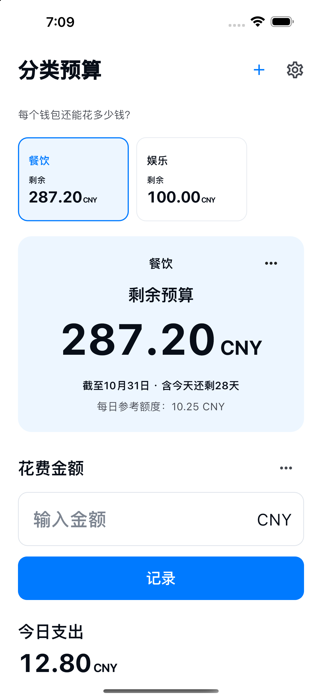

自定义钱包名称，并设定预算。
每个钱包还能花多少钱？
餐费、娱乐费。
分好预算，看清剩余。
餐饮、娱乐、日用品。为自己创建的钱包分配预算，随时查看每个钱包还能花多少钱。
查看使用方法适用于 iPhone / Android · 正在准备上架

使用方法
分预算，记花费，看剩余。
选择钱包，记录花费的金额。
在历史记录中修改记录或添加退款。
手动开始下一期预算，保留过去的记录。
只保留必需功能
钱包自由设置。
管理保持简单。
- 钱包名称
- 为餐饮、娱乐、日用品等用途设置自己喜欢的名称和预算，默认周期为本月。
- 剩余预算
- 剩余预算 = 设置的预算 − 已记录的支出 + 退款。它是基于输入记录的参考值，不代表银行或实际钱包的余额。其他钱包的余额不会抵消超支。
- 10种语言 · 10种货币
- 日本語 / English / 한국어 / 简体中文 / 繁體中文 / Español / Français / Deutsch / Italiano / Português (Brasil)
JPY / USD / EUR / KRW / CNY / TWD / BRL / GBP / CAD / AUD
保存在设备上的记录
无需注册账号。
钱包名称、预算、币种、期间，以及支出和退款的金额、日期、备注，都保存在此应用专用的设备本地数据库中，用于显示各钱包的预算和记录。
无需注册账号。应用没有向开发者服务器发送记录的功能，也没有广告、使用情况分析或跟踪。系统备份或设备迁移可能包含这些数据，但不保证能够恢复。 可以在历史记录中删除支出和退款。收起钱包会保留记录。卸载应用可能删除设备内的记录。系统备份请在设备或账号设置中管理。
隐私政策 →